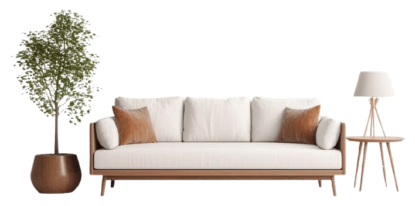

Pembuatan & Restorasi Sofa Seperti Baru Lagi!
Sofa lama Anda sudah usang atau rusak? Jangan buang dulu! Kami ahli dalam perbaikan, ganti kain, busa, dan peremajaan sofa agar kembali nyaman dan tampak seperti baru.
Hubungi Kami


Sofa lama Anda sudah usang atau rusak? Jangan buang dulu! Kami ahli dalam perbaikan, ganti kain, busa, dan peremajaan sofa agar kembali nyaman dan tampak seperti baru.
Hubungi Kami
Kami ahli dalam pembuatan dan restorasi sofa dengan berbagai model sesuai keinginan Anda. Material berkualitas tinggi dan pengerjaan rapi.
Kami siap melakukan perbaikan dan peremajaan agar sofa kembali seperti baru.
Desain, ukuran, warna, dan bahan yang bisa disesuaikan dengan kebutuhan Anda..
Kami juga menyediakan layanan Jasa Cuci Sofa dengan hasil bersih dan segar.
Perbaikan kulit asli untuk sofa, kursi, atau produk berbahan leather lainnya.
Dengan berbagai pilihan bahan dan model, kami siap mewujudkan gorden impian yang sesuai dengan kebutuhan dan gaya interior rumah, kantor, atau bisnis Anda.
Gratis, Memberikan solusi yang tepat untuk permasalahan sofa anda
Kami ahli dalam pembuatan sofa dengan berbagai model sesuai keinginan Anda. Desain modern, klasik, minimalis.

Anda perlu pembuatan custom sofa karena Anda dapat memiliki furnitur yang benar-benar sesuai dengan impian Anda, memberikan kenyamanan, keindahan, dan fungsionalitas yang diinginkan dalam ruangan rumah Anda.
Memperbaiki sofa adalah keputusan yang cerdas dan bermanfaat dari beberapa sudut pandang: Penghematan Finansial yang Signifikan, Keberlanjutan Lingkungan, Menjaga Nilai Sentimental, Penyesuaian Desain dan Gaya, serta Fokus pada Kualitas. Secara keseluruhan, memperbaiki sofa adalah cara bijaksana untuk menggabungkan penghematan, pertimbangan lingkungan, pemeliharaan nilai, dan kreativitas dalam perabotan rumah Anda.

Service Sofa
Sofa kami seperti baru lagi setelah restorasi di Putra Desa, terimakasih banyak.

Custom Sofa
Kami senang daengan hasil sofa puffnya, pengerjaan cepat dan rapih, admin responsif dan memberikan saran.

Cuci sofa
Cuci sofa di Putra Desa dengan harga yang terjangkau dengan proses yang sangat cepat, sofa jadi bersih dan harum.
Service Sofa Kulit
Pengerjaan sangat detail untuk sofa kami, Kualitas terbaik tanpa menguras kantong.
Ingin sofa yang nyaman, elegan, dan sesuai dengan keinginanmu? Putra Desa Sofa siap membantu!